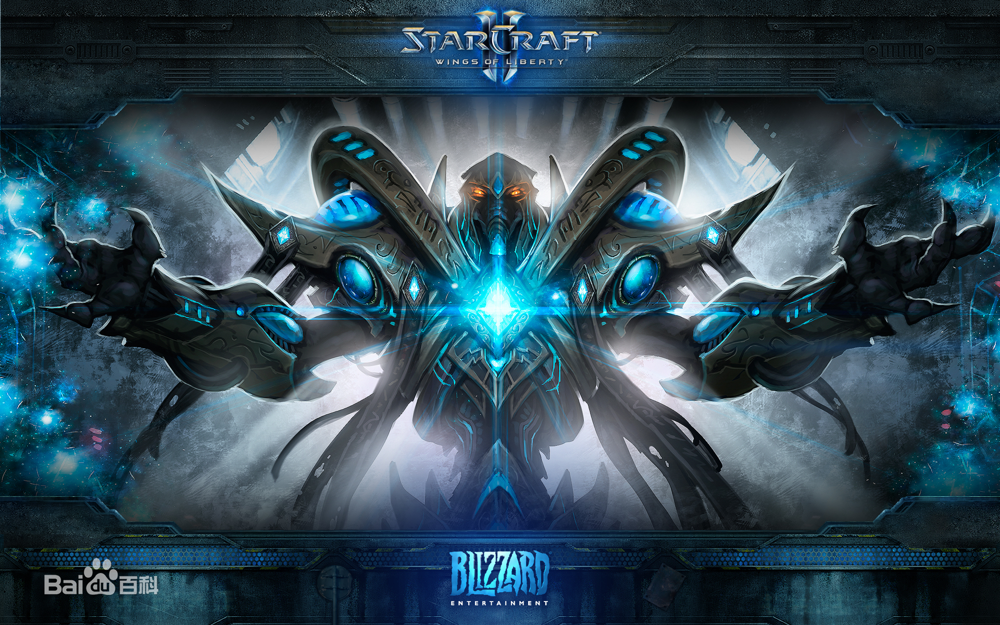
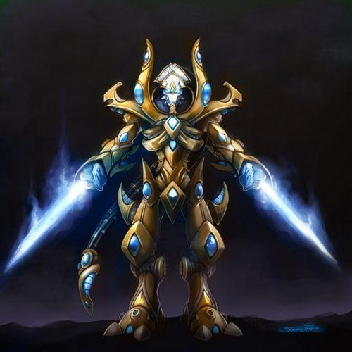

Star Craft II - Protoss
An ancient and noble warrior with a golden fleet and advanced phantom energy technology.
For thousands of years, the ancient and mysterious Protoss has played a pivotal role in the galaxy. Protoss warriors have unparalleled skills and courage, high-tech and powerful nether energy have strengthened their existing capabilities.
Exclusive features:
Liftable building
TThe shield on the unit will recharge over time
Powerful units such as colossus and aircraft carriers
Use space gate technology to jump through units
IMPORTANT UNIT
BERSERKER
The basic melee attacker is the core member of each Protoss ground force. After upgrading, you can quickly approach the escaped target.

HIGH TEMPLAR
Advanced skill-casting units can use phantom energy storms to cause a lot of damage to groups of enemies.

AIRCRAFT CARRIER
The pinnacle of Protoss technology: a capital ship capable of launching short-range interceptors and attacking ground and air units.